pairs( mtcars[,c(1,2,6)])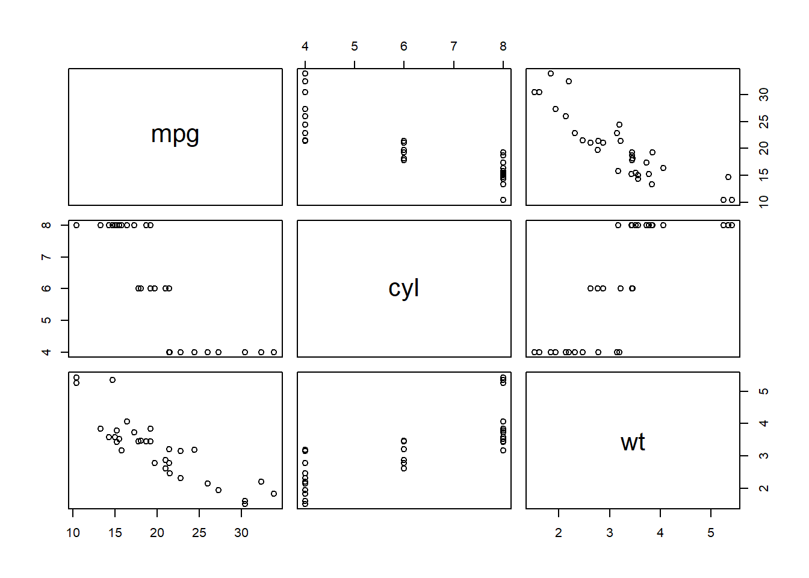
Sejam \((Y_1,\boldsymbol{x}_1'),\ldots,(Y_n,\boldsymbol{x'}_n)\) vetores aleatórios independentes. Denominamos por regressão o problema de obter \(r(\boldsymbol{x})=E[Y|\boldsymbol{x}]\). Nesse contexto, a variável \(Y\) é denominada resposta e \(\boldsymbol{x}'\) é denominado vetor de regressoras. No problema de regressão linear, temos, para \(i=1,\ldots,n\)
\[r(\boldsymbol{x}_i)=E[Y|\boldsymbol{x}_i]=\sum_{j=1}^q \beta_j x_{i,j}.\] Ao assumir que \(\hat{y}_i=y_i\) é uma estimativa para \(E[Y_i|\boldsymbol{x}_i]\), pode-se estimar \(\beta_1,\ldots,\beta_q\) encontrando \(\hat{\beta}_1,\ldots,\hat{\beta}_k\) que minimizam \[\sum_{i=1}^n( y_i-\hat{y}_i)^2=\sum_{i=1}^n\left(y_i-\sum_{j=1}^q\hat{\beta}_jx_{i,j}\right)^2.\] Esse é o problema conhecido como método dos mínimos quadrados, um dos primeiros métodos de estimação, criado por Lagrange no começo do século XIX. Por não assumir uma distribuição com o conhecimento dos parâmetros, esse método é semi-paramétrico. Ao fazer \(\boldsymbol{y}'=(y_1,\ldots,y_n)\) e \(\boldsymbol{X}'=(\boldsymbol{x}_1,\ldots,\boldsymbol{x}_n)\), temos que
\[\sum_{i=1}^n( y_i-\hat{y}_i)^2=(\boldsymbol{y}-\boldsymbol{X}\hat{\boldsymbol{\beta}})'(\boldsymbol{y}-\boldsymbol{X}\hat{\boldsymbol{\beta}}),\] cuja minimização é dada por \[\hat{\boldsymbol{\beta}}=(\boldsymbol{X}'\boldsymbol{X})^{-1}\boldsymbol{X}\boldsymbol{y}.\]
Example 7.1 O banco mtcars possui 32 medidas de automóveis. Estamos interessados em relacionar as variáveis regressoras peso (wt) e número de cilindros (cyl) com a variável milhas por galão (mpg). Observando os diagramas de dispersão abaixo, temos motivos para pensar em um modelo linear.
pairs( mtcars[,c(1,2,6)])
Utilizamos a função lm que ajusta o modelo de regressão linear. Seu argumento principal é mpg ~ wt + cyl, o que implica no modelo
\[r(x)=\hat{\beta}_0+\hat{\beta}_1\text{peso}+\hat{\beta}_2\text{no. cilindros}\] A função coefficients armazena os valores estimados para \(\beta_0,\beta_1,\beta_2\).
mod <- lm( mpg ~ wt + cyl, data = mtcars)
beta <- coefficients(mod)
beta(Intercept) wt cyl
39.686261 -3.190972 -1.507795 A função predict apresenta o valor de \(\hat{r}(.)\). Abaixo, apresentamos a relação entre peso e milhas por galão obseervada e predita.
plot( mtcars$wt, mtcars$mpg, pch = 16, col ='seagreen')
reg <- data.frame( wt = mtcars$wt, cyl = mtcars$cyl)
pred <- predict(mod, reg)
points(mtcars$wt, pred, col = 2, pch = 16)
legend('topright', c('Observado','Predito'), col=c('seagreen',2), pch=16, bty='n')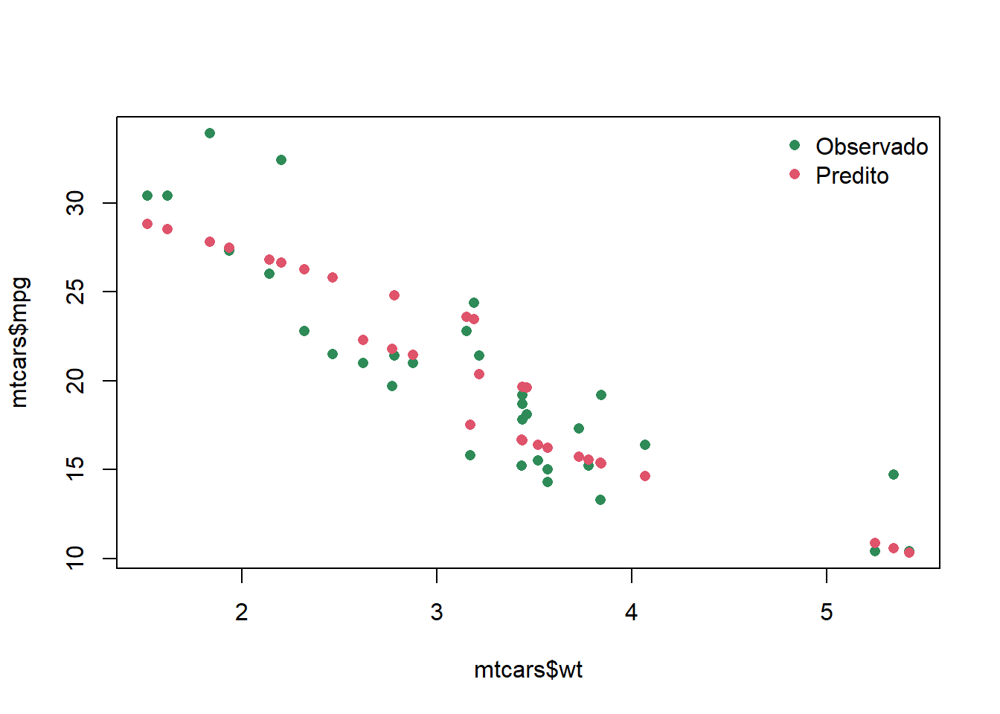
Estamos interessados na estrutura mais geral, ou seja
\[E[Y|\boldsymbol{x}]=r(\boldsymbol{x}),\] no qual \(r(.)\) é desconhecida. Ao estimar \(r(\boldsymbol{x})\) por \(\hat{r}_n(\boldsymbol{x})\), podemos avaliar o ajuste pelos mínimos quadrados calculados por validação cruzada
\[\sum_{i=1}^n(y_i-\hat{r}_{-i}(x_i))^2,\] onde \(\hat{r}_{-i}\) é a estimativa não paramétrica de \(y_i\) calculada removendo a \(i\)-ésima unidade amostral.
Sejam \((Y_1,x_1),\ldots,(Y_n,x_n)\) variáveis aleatórias independentes onde \[Y_i=r(x_i)+\varepsilon_i,\] com \(E[\varepsilon_i]=0\) e \(Var[\varepsilon_i]=\sigma^2\), ou seja
\[r(x)=E[Y|x]=\int y f(y|x)dy=\frac{\int yf(x,y)dy}{f(x)}\] Podemos estimar \(r(x)\) realizando duas estimativas via método do núcleo. Primeiro, estimamos
\[\hat{f}_n(x)=\frac{1}{n}\sum_{i=1}^n \frac{1}{h_X}k\left(\frac{x-x_i}{h_X}\right).\] Em seguida, estimamos \(f(x,y)\) utilizando um núcleo com densidades independentes, como dado abaixo
\[\hat{f}_n(x,y)=\frac{1}{n}\sum_{i=1}^n \frac{1}{h_Xh_Y}k\left(\frac{x-x_i}{h_X}\right)k\left(\frac{y-y_i}{h_Y}\right).\] Portanto, a integral \(\int yf(x,y)dy\) é estimada por
\[\begin{align}\int y\hat{f}_n(x,y)dy&=\frac{1}{n}\sum_{i=1}^{n}\frac{1}{h_X}k\left(\frac{x-x_i}{h_Y}\right)\int y\frac{1}{h_Y}k\left(\frac{y-y_i}{h_Y}\right)dy\\&=\frac{1}{n}\sum_{i=1}^ny_ik\left(\frac{x-x_i}{h_X}\right)\end{align}\] logo, \(r(x)\) é estimada por
\[\hat{r}(x)=\sum_{i=1}^n y_iw(x),\] onde
\[w(x)=\sum_{i=1}^n\frac{y_ik\left(\frac{x-x_i}{h_X}\right)}{\sum_{i=1}^n k\left(\frac{x-x_i}{h_X}\right)}.\]
Para encontrar \(h_X\), minimizamos os quadrados dos erros por validação cruzada
\[\hat{J}(h)=\sum_{i=1}^n \left(y_i-\hat{r}_{-i}(x_i)\right)^2,\] onde \(\hat{r}_{-i}\) é o estimador de Nadaraya-Watson calculado sem a \(i\)-ésima observação.
Example 7.2 Os dados abaixo, disponíveis no pacote np, se referem a uma amostra aleatória retirada do censo canadense de 1971 de homens com o mesmo nível de educação. As variávels são a idade (age) e o logaritmo do salário (logwage).
# install.package('np')
require(np)Carregando pacotes exigidos: npWarning: pacote 'np' foi compilado no R versão 4.5.3np 0.70-2
Examples and guides at https://jeffreyracine.github.io/gallery/
See also vignette("np_getting_started", package = "np")data(cps71, package = "np")
dados <- cps71[, c("logwage", "age")]
plot( dados$age, dados$logwage , xlab= 'Idade', ylab='Log-salário')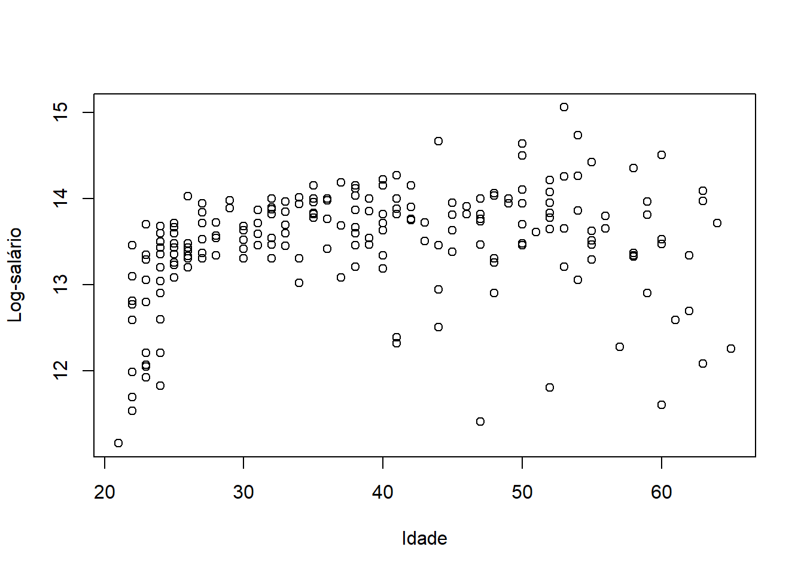
O pacote np possui diversos métodos de regressão com núcleos implementados para a função pnpregbw, que retorna \(h_X\) e ajusta o modelo. Ao colocar seu argumento regtype='lc', estamos realizando a regressão de Nadaraya-Watson. Já o argumento bwmethod indica o método de escolha da banda, sendo a minimização dos quadrados dos erros por validação cruzada o padrão.
options(np.messages = FALSE)
# Seleção do comprimento da banda
bw <- npregbw(logwage ~ age, data = dados, regtype = "lc")
summary(bw)
Regression Data (205 observations, 1 variable(s)):
Regression Type: Local-Constant
Bandwidth Selection Method: Least Squares Cross-Validation
Formula: logwage ~ age
Bandwidth Type: Fixed
Objective Function Value: 0.316055 (achieved on multistart 1)
Number of Function Evaluations: 47 (fast = 0)
Exp. Var. Name: age Bandwidth: 1.892158 Scale Factor: 0.4487743
Continuous Kernel Type: Second-Order Gaussian
No. Continuous Explanatory Vars.: 1
Estimation Time: 0.37 seconds# ajusta a regressão
fit <- npreg(bws = bw, data = dados)
summary(fit)
Regression Data: 205 training points, in 1 variable(s)
age
Bandwidth(s): 1.892158
Kernel Regression Estimator: Local-Constant
Bandwidth Type: Fixed
Residual standard error: 0.5307943
R-squared: 0.3108675
Continuous Kernel Type: Second-Order Gaussian
No. Continuous Explanatory Vars.: 1
Estimation Time: 0.37 seconds (optim 0.37s, fit 0s)## Gráfico do ajuste.
plot( fit, plot.errors.method = "bootstrap" )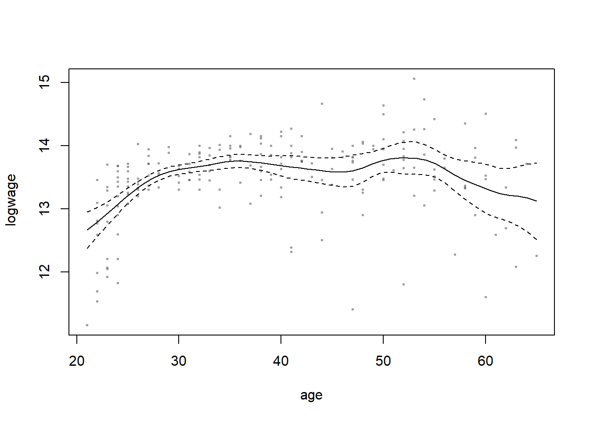
Para obter o valor de \(r(x)\) para um \(x\) qualquer, utilizamos a função predict.
# verificando o log-salário médio para alguém de 50 anos
age <- 50
novo <- data.frame(age)
predict(fit, newdata= novo )[1] 13.76822A estensão multivariada (para mais regressoras) é imediata. Observe que
\[E[Y|\boldsymbol{x}]=\frac{\int yf(y,\boldsymbol{x})dy}{f(\boldsymbol{x})}\] Portanto, basta realizar a estimação não paramétrica das entidades envolvidas. Considerando que existem \(q\) variáveis regressoras, a estimação não paramétrica de \(f(\boldsymbol{x})\) é realizada a partir do núcleo formado por \(q\) densidades independentes, ou seja
\[\hat{f}_n(\boldsymbol{x})=\frac{1}{n}\sum_{i=1}^n \prod_{j=1}^q\frac{1}{h_j}k\left(\frac{x_j-x_{i,j}}{h_j}\right)\] e, de modo análogo,
\[\hat{f}_n(y,\boldsymbol{x})=\frac{1}{n}\sum_{i=1}^n\frac{1}{h_Y}k\left(\frac{y-y_{i}}{h_Y}\right) \prod_{j=1}^q\frac{1}{h_j}k\left(\frac{x_j-x_{i,j}}{h_j}\right)\] o que implica que a integral \(\int y f(y,\boldsymbol{x})dy\) pode ser estimada por
\[\begin{align}\int y\hat{f}_n(y,\boldsymbol{x})dy&=\frac{1}{n}\sum_{i=1}^n\left[\int\frac{y}{h_Y}k\left(\frac{y-y_{i}}{h_Y}\right)dy\right] \prod_{j=1}^q\frac{1}{h_j}k\left(\frac{x_j-x_{i,j}}{h_j}\right)\\&=\frac{1}{n}\sum_{i=1}^ny_i \prod_{j=1}^q\frac{1}{h_j}k\left(\frac{x_j-x_{i,j}}{h_j}\right)\end{align}\] e \[E[Y|\boldsymbol{x}]=\sum_{i=1}^n y_iw(\boldsymbol{x}),\] onde \[w(\boldsymbol{x})=\frac{\prod_{j=1}^q k\left(\frac{x_j-x_{i,j}}{h_j}\right)}{\sum_{i=1}^n \prod_{j=1}^q k\left(\frac{x_j-x_{i,j}}{h_j}\right)}\] De modo análogo ao caso univariado, encontramos \(h_1,\ldots,h_q\), minimizando a soma dos quadrados dos erros por validação cruzada
\[\hat{J}(\boldsymbol{h})=\sum_{i=1}^n \left(y_i-\hat{r}_{-i}(\boldsymbol{x}_i)\right)^2,\] onde \(\hat{r}_{-i}\) é a estimativa de Nadaraya-Watson ajustada sem a \(i\)-ésima unidade amostral.
Example 7.3 O exemplo ilustra a regressão de Nadaraya-Watson (constante local) para prever o comprimento da sépala (Sepal.Length) usando duas regressoras do banco iris. Inicialmente, a função npregbw() calcula as larguras de banda ótimas por validação cruzada, equilibrando o viés e a variância de forma automatizada. Em seguida, o modelo é ajustado com a função npreg(), que estima a superfície não-paramétrica por meio de médias ponderadas locais. Por fim, o gráfico de diagnóstico confronta os valores reais com os preditos pelo Kernel, revelando uma forte aderência dos pontos à linha de referência de 45 graus, o que comprova a alta eficácia e o poder preditivo do estimador.
pairs(iris)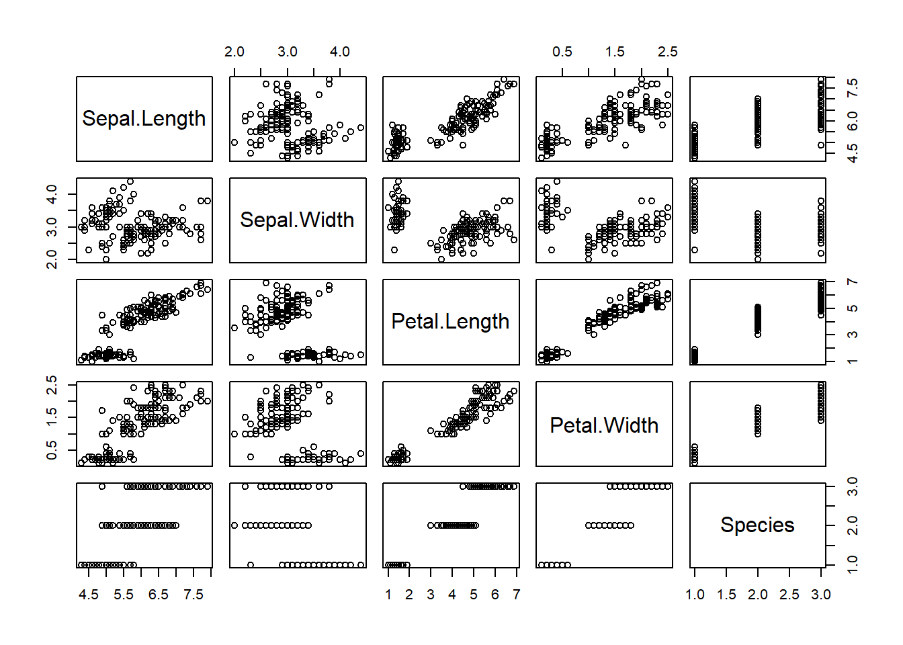
options(np.messages = FALSE)
# Seleção do comprimento da banda
bw <- npregbw(Sepal.Length ~ Sepal.Width + Petal.Length , data = iris, regtype = "lc")
summary(bw)
Regression Data (150 observations, 2 variable(s)):
Regression Type: Local-Constant
Bandwidth Selection Method: Least Squares Cross-Validation
Formula: Sepal.Length ~ Sepal.Width + Petal.Length
Bandwidth Type: Fixed
Objective Function Value: 0.1014368 (achieved on multistart 2)
Number of Function Evaluations: 354 (fast = 0)
Exp. Var. Name: Sepal.Width Bandwidth: 0.1285183 Scale Factor: 0.7992493
Exp. Var. Name: Petal.Length Bandwidth: 0.2225359 Scale Factor: 0.2905787
Continuous Kernel Type: Second-Order Gaussian
No. Continuous Explanatory Vars.: 2
Estimation Time: 1.03 seconds# ajusta a regressão
fit <- npreg(bws = bw, data = iris)
# toma os valores preditos
iris$predito <- fitted(fit)
# gráficos:
# Gráfico de diagnóstico: Real vs Predito
plot(iris$Sepal.Length, iris$predito,
xlab = "Sepal.Length Real", ylab = "Sepal.Length Predito pelo Kernel",
main = "Valores Reais vs. Ajustados",
pch = 19, col = "darkgreen")
# Adiciona uma linha de referência de 45 graus (Ajuste Perfeito)
abline(a = 0, b = 1, col = "red", lwd = 2)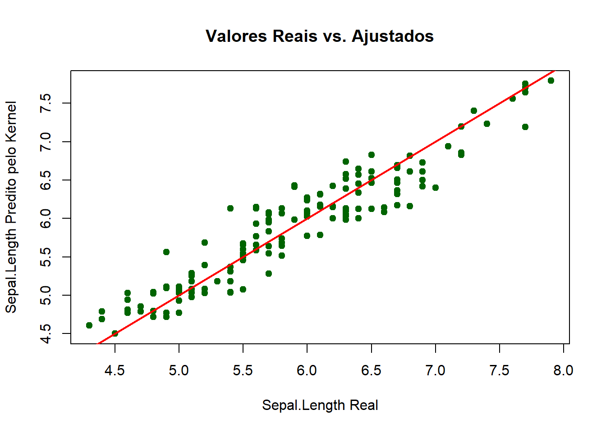
# valores preditos usando a regressora Sepal width:
xreg = data.frame(iris$Sepal.Width, iris$Petal.Length)
pred = predict( bw, xreg)
plot(iris$Sepal.Width , iris$Sepal.Length)
points(xreg$iris.Sepal.Width, pred$mean, pch = 16)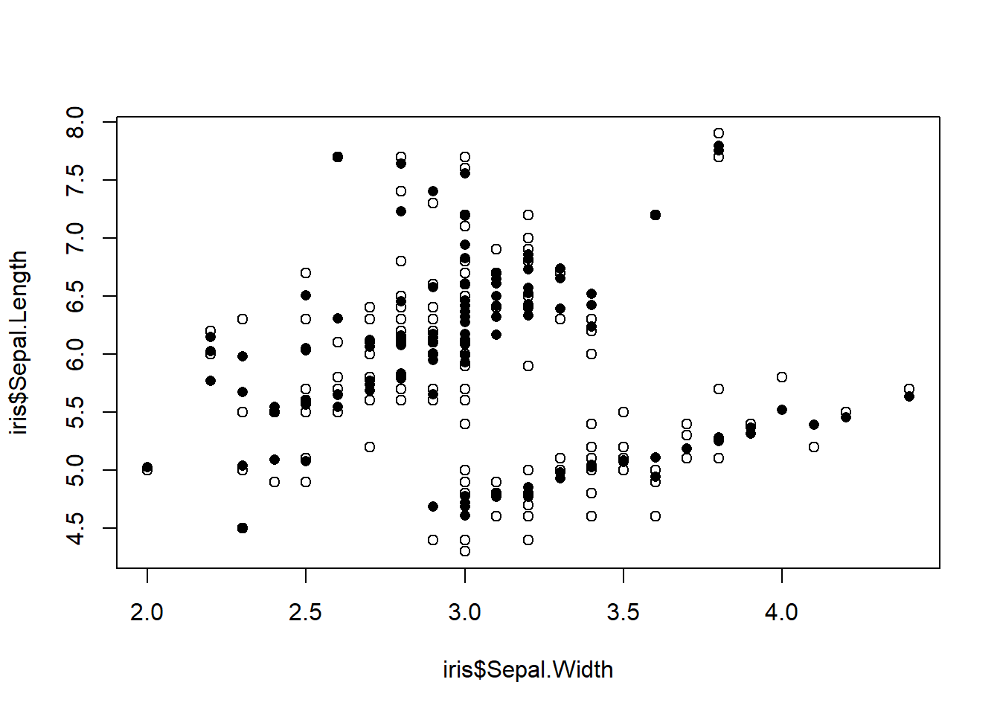
Embora a regressão de Nadarya-Watson tenha a flexibilidade necessária para modelar o comportamentos não lineares, na prática ela sofre o problema da maldição da dimensionalidade explicada no capítulo anterior.
Abaixo, apresentamos um conjunto de dados simulado, no qual são apresentados a verdadeira regressão (\(r(x)=3\sin(x)\), em cinza) e a reta de regressão linear estimada, ou seja \[\hat{r}(x)=\hat{\beta}_0+\hat{\beta}_1x\]
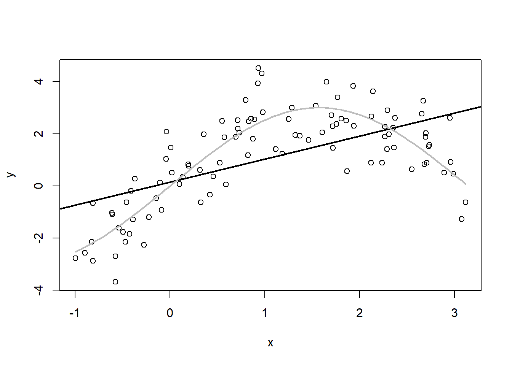
Podemos obter uma aproximação melhor, separando o conjunto de dados em duas partes e ajustando uma regressão linear para cada conjunto. Seja \(\xi\) o valor de \(x\) que particiona os valores (tal valor será denominado nó). Teremos então o seguinte modelo de regressão
\[r(x)=E[Y|x=x]=\begin{cases}\beta_0+\beta_1x,&x<\xi\\ \beta_2+\beta_3x,&x\geq \xi.\end{cases}\] Como \(r(x)\) é contínua, é necessário ter \[\beta_0+\beta_1\xi=\beta_2+\beta_3\xi\Rightarrow \beta_2-\beta_0=-(\beta_3-\beta_1)\xi.\]
Note que \[\begin{align}r(x)&=[\beta_0+\beta_1 x]I_{(-\infty,\xi)}(x)+[\beta_2+\beta_3 x]I_{[\xi,\infty)}(x)\\&=[\beta_0+\beta_1 x]\left(1-I_{[\xi,\infty)}(x)\right)+[\beta_2+\beta_3 x]I_{[\xi,\infty)}(x)\\&= \beta_0+\beta_1x+[\beta_2-\beta_0+(\beta_3-\beta_1)x]I_{[\xi,\infty)}(x)\\&=\beta_0+\beta_1x+\underbrace{(\beta_3-\beta_1)}_{\theta}(x-\xi)I_{[\xi,\infty)}(x),\end{align}\] e, como \(I_{[\xi,\infty)}(x)=I_{[0,\infty)}(x-\xi)\), definindo \[(x-\xi)_+=(x-\xi)I_{[\xi,\infty)}(x),\] temos que o modelo de regressão proposto pode ser reescrito como \[r(x)=\beta_0+\beta_1x+\theta(x-\xi)_+\] A expressão acima é denominada spline de ordem 2 e a estimação de seus coeficientes é realizada como em um modelo de regressão tradicional. Abaixo, mostramos o spline de ordem 2 ajustado considerando a mediana como nó.
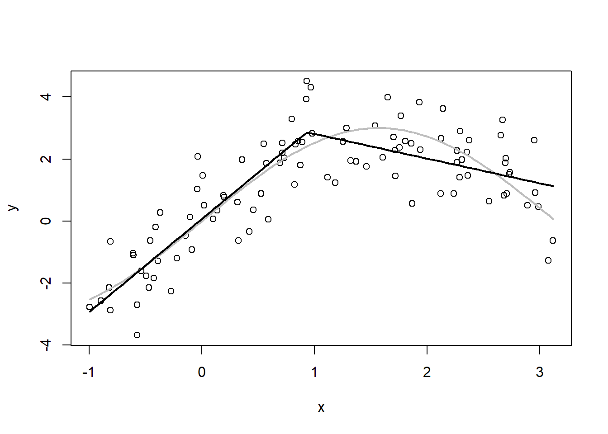
De modo semelhante ao que foi discutido, podemos definir o spline de ordem 3, também conhecido como cúbico, dado por
\[r(x)=\beta_0+\beta_1x +\beta_2x^2+\theta(x-\xi)_+^2.\] Abaixo, apresentamos o spline cúbico ajustado.
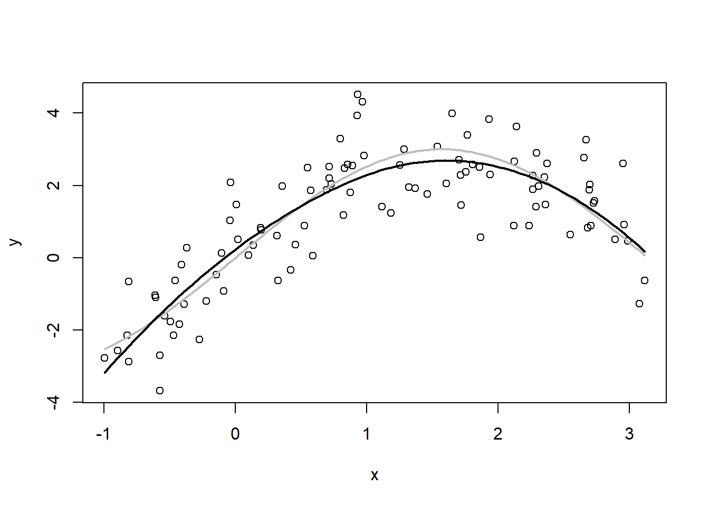
Em geral, é difícil distinguir a olho nu a diferença entre splines de ordem maior. Todavia, pode-se definir um spline de ordem \(M\), com \(M=1,2,\ldots\) por \[r(x)=\sum_{j=0}^{M-1}\beta_jx^{j}+\theta(x-\xi)_+^{M-1}.\] Além disso, mais nós podem ser acrescentados, produzindo o modelo
\[r(x)=\sum_{j=0}^{M-1}\beta_jx^{j}+\sum_{k=1}^K\theta_k(x-\xi_k)_+^{M-1}.\]
Example 7.4 Abaixo, revisitamos o banco de dados mtcars, agora considerando a relação entre a regressora potência (hp) e a resposta milhas por galão (mpg). Observe a relação não linear entre as duas variáveis
plot(mtcars$hp, mtcars$mpg)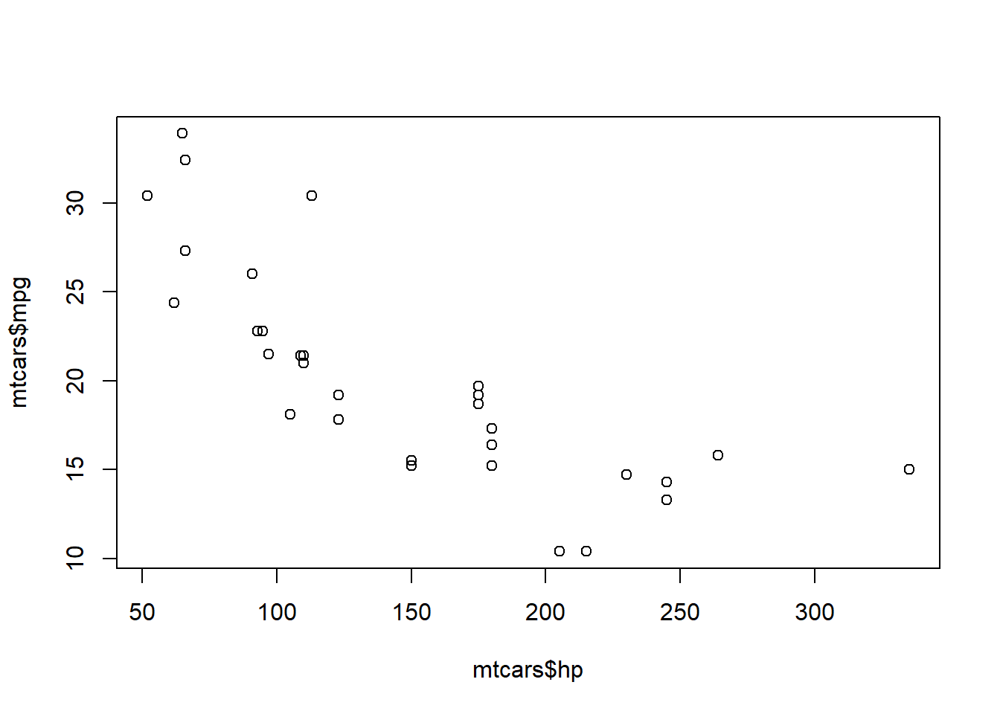
A função spline, do pacote stats ajusta o spline cúbico. Contudo, o pacote splines permite mais flexibilidade. Neste pacote, a matriz de regressão do spline de ordem \(M\) é construída a partir da função bs(x, degree, knots), onde degree é a ordem (sendo o cúbico o padrão) e knots é um vetor de nós. Vamos utilizar os quartis como nós.
require(splines)Carregando pacotes exigidos: splinesplot(mtcars$hp, mtcars$mpg)
mod <- lm( mpg ~ bs(hp), data = mtcars)
xhp = seq( min(mtcars$hp), max(mtcars$hp),length.out =50)
pred = predict(mod, data.frame( hp = xhp))
lines( xhp, pred, lwd = 2)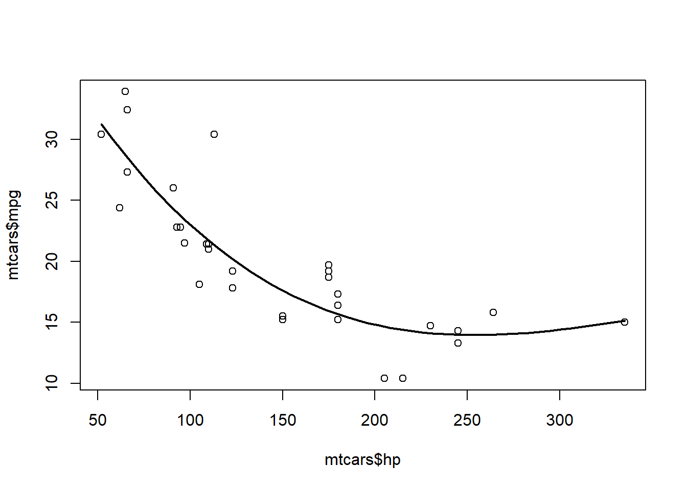
Vamos adicionar uma banda de confiança, utilizando para isso a função predict para retornar o erro padrão do modelo.
library(scales)
pred = predict(mod, data.frame( hp = xhp), se.fit = TRUE)
banda_inf <- pred$fit - 1.96 * pred$se.fit
banda_sup <- pred$fit + 1.96 * pred$se.fit
plot(mtcars$hp, mtcars$mpg, pch = 16, col = 'tomato',
ylab = 'Milhas por galão',xlab = 'Potência')
polygon( c(xhp, xhp[50:1]),
c(banda_inf, banda_sup[50:1]), col = alpha('orange', .3))
lines( xhp, pred$fit, lwd = 2)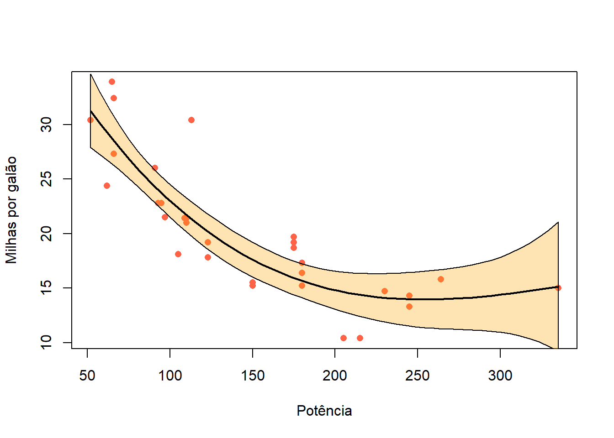
Para o caso multivariado, podemos definir para cada variável regressora a função
\[g_m(x)=\sum_{j=0}^{M-1}\beta_{j,m}x^{j}+\sum_{k=1}^K\theta_{k,l}(x-\xi_k)_+^{M-1}.\] e em seguida definir
\[r(\boldsymbol{x})=\sum_{m=1}^q g_m(x_m).\]
Example 7.5 Revisitamos mais uma vez o banco de dados mtcars. Vamos ajustar o modelo de regressão spline cubico para predizer a variável mpg pelas variáveis hpe wt.
require(splines)
mod = lm(mpg ~ bs(hp)+ bs(wt), data = mtcars)
summary(mod)
Call:
lm(formula = mpg ~ bs(hp) + bs(wt), data = mtcars)
Residuals:
Min 1Q Median 3Q Max
-3.2200 -1.6188 -0.0881 1.1621 4.6491
Coefficients:
Estimate Std. Error t value Pr(>|t|)
(Intercept) 34.588 1.598 21.644 < 2e-16 ***
bs(hp)1 -10.582 4.304 -2.458 0.02123 *
bs(hp)2 -8.514 3.792 -2.245 0.03383 *
bs(hp)3 -9.686 2.872 -3.373 0.00243 **
bs(wt)1 -12.794 4.576 -2.796 0.00980 **
bs(wt)2 -9.159 3.912 -2.341 0.02748 *
bs(wt)3 -14.225 2.564 -5.548 9.1e-06 ***
---
Signif. codes: 0 '***' 0.001 '**' 0.01 '*' 0.05 '.' 0.1 ' ' 1
Residual standard error: 2.134 on 25 degrees of freedom
Multiple R-squared: 0.8989, Adjusted R-squared: 0.8747
F-statistic: 37.06 on 6 and 25 DF, p-value: 2.905e-11Abaixo, apresentamos o ajuste da potência fixando o peso nos quartis, com bandas de confiança de 90%.
require(scales)
require(splines)
xhp = seq(min(mtcars$hp),max(mtcars$hp), length.out = 50)
# 25%
xreg = data.frame( hp = xhp,
wt = quantile(mtcars$wt,.25))Warning in data.frame(hp = xhp, wt = quantile(mtcars$wt, 0.25)): nomes de
linhas foram encontrados em uma variável curta e foram descartadospred = predict(mod, xreg, se.fit = TRUE)
sup = pred$fit + 1.64*pred$se.fit
inf = pred$fit - 1.64*pred$se.fit
plot(xhp,pred$fit, type = 'l', ylim = c(10,30))
polygon( c(xhp, xhp[50:1]),
c(inf, sup[50:1]), col = alpha('orange',.3))
# 50%
xreg = data.frame( hp = xhp,
wt = quantile(mtcars$wt,.5))Warning in data.frame(hp = xhp, wt = quantile(mtcars$wt, 0.5)): nomes de linhas
foram encontrados em uma variável curta e foram descartadospred = predict(mod, xreg, se.fit = TRUE)
sup = pred$fit + 1.64*pred$se.fit
inf = pred$fit - 1.64*pred$se.fit
lines(xhp,pred$fit, type = 'l')
polygon( c(xhp, xhp[50:1]),
c(inf, sup[50:1]), col = alpha('tomato',.3))
# 75%
xreg = data.frame( hp = xhp,
wt = quantile(mtcars$wt,.75))Warning in data.frame(hp = xhp, wt = quantile(mtcars$wt, 0.75)): nomes de
linhas foram encontrados em uma variável curta e foram descartadospred = predict(mod, xreg, se.fit = TRUE)
sup = pred$fit + 1.64*pred$se.fit
inf = pred$fit - 1.64*pred$se.fit
lines(xhp,pred$fit, type = 'l')
polygon( c(xhp, xhp[50:1]),
c(inf, sup[50:1]), col = alpha('cyan',.3))
legend('topright',c('25%','50%','75%'), bty = 'n')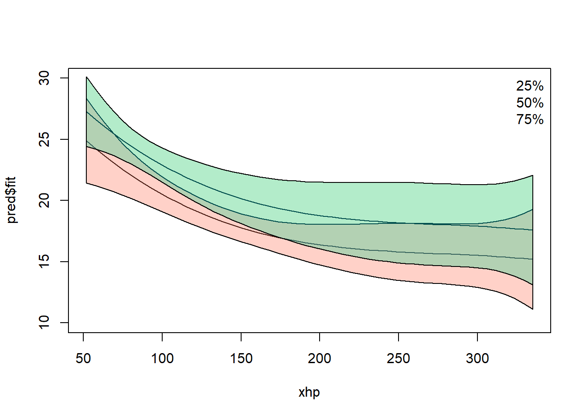
É importante notar que o modelo aditivo utilizando splines proposto não sofre o mesmo problema da regressão de Nadarya-Watson com o número de regressoras, uma vez que o aumento da complexidade é linear. Entretanto, esse modelo ignora a complexidade da estrutura conjunta das regressoras.
Seja \((Y_1,\boldsymbol{x}^T_1),\ldots,(Y_n,\boldsymbol{x}_n^T)\) uma amostra de variáveis independentes, onde \(\boldsymbol{x}^T\) é um vetor comprimento \(q\) contendo as variáveis regressoras. Vimos anteriormente que a regressão \(r(\boldsymbol{x})=E(Y|\boldsymbol{X}=\boldsymbol{x})\) pode ser estimada por um modelo aditivo,
\[\hat{r}(\boldsymbol{x})=\sum_{j=1}^q g_j(x_j)+\varepsilon\] onde \(g_j\) é um spline definido a partir da \(j\)-ésima variável regressora. Uma das críticas os splines está no fato de que a variabilidade conjunta das regressoras não é considerada. Uma alternativa para esse problema seria o modelo de regressão por busca de projeção, dada por
\[\begin{align} \hat{r} (\boldsymbol{x})&=\sum_{m=1}^Mg_m(\boldsymbol{z}_m)\\&\boldsymbol{z}_m=\boldsymbol{w}^T_m\boldsymbol{x},\end{align}\] onde as funções \(g_m(.)\), denominadas funções de crista, são funções suaves que devem ser estimadas (utilizando splines, por exemplo). Tais funções são definidas sob as projeções unidimensionais \(\boldsymbol{z}_1,\ldots,\boldsymbol{z}_M\). Como procuramos pelos pesos \(\boldsymbol{w}_m\) que ajustam o modelo, isso justifica o nome “busca de projeção”. O vetor de pesos tem o objetivo exclusivo de apontar a direção do eixo de projeção
Example 7.6 Para ilustrar a flexibilidade do modelo de regressão por busca de projeção, considere o seguinte modelo de regressão não linear
\[E(Y|\boldsymbol{X}=(x_1,x_2))=x_1x_2\] Esse modelo pode ser obtido a partir das seguintes funções de crista:
\[\begin{align}g_1(\boldsymbol{z}_1)&=\frac{1}{4}\left(x_1+x_2\right)^2\\g_2(\boldsymbol{z}_1)&=-\frac{1}{4}\left(x_1-x_2\right)^2\end{align}\] ou seja, \[E(Y|\boldsymbol{X}=\boldsymbol{x})=g_1(\boldsymbol{w}^T_1\boldsymbol{x})+g_2(\boldsymbol{w}^T_2\boldsymbol{x}),\] onde \(\boldsymbol{w}^T_1=(1,1)\) e \(\boldsymbol{w}^T_2=(1,-1)\). Produtos de ordem maior podem ser representados de modo similar.
De fato, um modelo de regressão por busca de projeção pode aproximar qualquer função contínua para \(M\) grande o suficiente, estando dentro da classe dos modelos conhecidos como aproximadores universais. Entretanto, como as regressoras entram no modelo como projeções, a interpretação do modelo ajustado é em geral complexa. Portanto, um modelo de regressão por busca de projeção é mais útil para problemas de predição.
O ajuste deste modelo procura pelos pesos \(\boldsymbol{w}_1,\cdots,\boldsymbol{w}_m\) e funções de crista \(g_1(.),\ldots,g_m(.)\) que minimizam o erro quadrático
\[\sum_{i=1}^n[y_i-\sum_{m=1}^M g_m(\boldsymbol{w}_m^T\boldsymbol{x}_i)]^2.\] O processo numérico de minização consiste em repetir me iniciar com um vetor de pesos (obtidos, por exemplo, via componentes principais) e seguir os seguintes passos:
Estimar \(g_1,\ldots,g_M\) a partir de \(\boldsymbol{w}_1^T\boldsymbol{x},\ldots,\boldsymbol{w}_1^T\boldsymbol{x}\)
Para \(m=1,\ldots, M\), estimar \(\boldsymbol{w}_m\) minimizando
\[\sum_{i=1}^n [y_i- g_m(\boldsymbol{w}_m^T\boldsymbol{x})-\sum_{j\neq m}g_j(\boldsymbol{w}_j^T\boldsymbol{x})]^2\] ::: {#exm-}
Utilizando o banco mtcars, isolamos a variável dependente mpg (Milhas por Galão) e as regressoras cyl (Cilindros), hp (Cavalos de Força) e wt (Peso em mil libras).
dados <- mtcars[, c("mpg", "cyl", "hp", "wt")]O objetivo é capturar interações não-lineares e não-aditivas globais sem sofrer com a maldição da dimensionalidade, já que o PPR estima as direções de projeção \(\boldsymbol{w}_m\) otimizando visualizações unidimensionais.
A função ppr o R implementa o algoritmo de Friedman e Stuetzle (1981). O processo alterna entre a estimação das funções de suavização (via splines ou o original supersmoother) e a atualização das direções de projeção por mínimos quadrados quasi-Newton. Abaixo, mostramos como obter o ajuste com dois termos de projeção, utilizand splines.
mod <- ppr(mpg ~ cyl + hp + wt,
data = dados,
nterms = 2,
sm.method = "spline")Ao executar o summary, o R retorna os coeficientes de projeção \(\boldsymbol{w}\) (na saída, é o termo alpha).
summary(mod)Call:
ppr(formula = mpg ~ cyl + hp + wt, data = dados, nterms = 2,
sm.method = "spline")
Goodness of fit:
2 terms
72.4467
Projection direction vectors ('alpha'):
term 1 term 2
cyl -0.26599322 -0.57539038
hp -0.01492193 0.02564463
wt -0.96385940 -0.81747676
Coefficients of ridge terms ('beta'):
term 1 term 2
5.819413 1.231158
Equivalent df for ridge terms:
term 1 term 2
5.04 4.94 A primeira projeção é dada por \[-0,26\cdot \text{cilindros}-0,015\cdot \text{potência}-0,96\cdot \text{peso}\] Isso implica que valores que essa componente possui uma relação inversa com o número de cilindros, a potência e o peso. Deste modo, quando maiores forem os valores dessas regressoras, menores serão os valores da primeiro projeção. Já a segunda é dada por \[-0,57\cdot \text{cilindros}+0,02\cdot \text{potência}-0,81\cdot \text{peso}\] Para carros com o mesmo peso e número de cilindros, essa projeção aumenta com o aumento da potência, sendo portanto uma variável relacioada à calbração do motor.
No sumário hà os termor \(\beta_1\) e \(\beta_2\). Na formulação original, o modelo era dado por \[\sum_{n=1}^M \beta_mg_m(\boldsymbol{w}_m^T\boldsymbol{x}),\] sendo considerado hoje em dia redundante. Independente disso, \(\beta_1\) e \(\beta_2\) representam os pesos das funções de crista. Portanto, para fins de interpretação, a primeira projeção tem maior relevância.
Por último, o sumário apresenta os graus de liberdade equivalentes das funções de crista. Na prática, esse valor mensura a complexidade e a flexibilidade geométrica de cada função. Graus de liberdade próximos de 2 implicam um comportamento aproximadamente linear para a projeção correspondente. Didaticamente, o valor dos graus de liberdade subtraído de uma unidade (\(df - 1\)) pode ser interpretado como o grau do polinômio cuja flexibilidade mais se assemelha à da função de crista estimada.
Abaixo, calcumos o erro quadrático médio do modelo e o \(R^2\).
predicoes <- predict(mod, newdata = dados)
# Métricas de Performance: EQM e R²
eqm <- mean((dados$mpg - predicoes)^2)
r_quadrado <- 1 - (sum((dados$mpg - predicoes)^2) / sum((dados$mpg - mean(dados$mpg))^2))
cat("Erro Quadrático Médio (EQM):", round(eqm, 4), "\n")Erro Quadrático Médio (EQM): 2.264 cat("Coeficiente de Determinação (R²):", round(r_quadrado, 4), "\n")Coeficiente de Determinação (R²): 0.9357 Por último, apresentamos as funções de crista estimadas para as duas projeções.
par(mfrow = c(1, 2))
plot(mod, ask = FALSE, main = "Termo Projetado")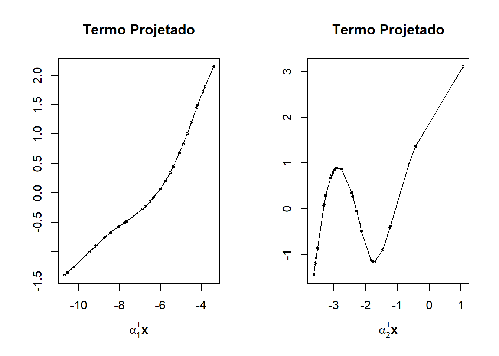
Cada gráfico gerado representa a função \(g_m\). O eixo horizontal mostra o valor da projeção \(\boldsymbol{w}_m^T X\) e o eixo vertical mostra a contribuição parcial para a predição de mpg. Desvios significativos de uma linha reta justificam empiricamente o uso deste modelo sobre a regressão linear múltipla tradicional para este conjunto de dados.
:::
Seja \((Y_1,\boldsymbol{x}^T_1),\ldots,(Y_n,\boldsymbol{x}_n^T)\) uma amostra de variáveis independentes, onde \(\boldsymbol{x}^T\) é um vetor comprimento \(q\) contendo as variáveis regressoras.
O modelo de um neurônio, que é a base de uma rede neural (artifical) é dado apresentado no seguinte diagrama
graph LR
%% Nós de Entrada
subgraph Entrada [Variáveis de Entrada]
X1["X₁ (Regressor 1)"]
X2["X₂ (Regressor 2)"]
Xp["Xₚ (Regressor p)"]
end
%% Nós de Operação
subgraph Neuronio [Estrutura do Neurônio]
Juncao((Σ))
Ativac[["Função de Crista: g(·)"]]
end
%% Saída
Y["Resposta (Y)"]
%% Conexões com os Pesos
X1 -- "w₁" --> Juncao
X2 -- "w₂" --> Juncao
Xp -- "wₚ" --> Juncao
%% Fluxo Interno e Saída
Juncao -- "Argumento Projetado<br>(αᵀX)" --> Ativac
Ativac --> Y
%% Estilização para fins didáticos
style Juncao fill:#f9f,stroke:#333,stroke-width:2px
style Ativac fill:#bbf,stroke:#333,stroke-width:2px
style Entrada fill:#fff,stroke:#fff
style Neuronio fill:#f5f5f5,stroke:#999,stroke-dasharray: 5 5
ou, de modo simplificado,
graph LR
%% Nós de Variáveis (Sinais)
X1((X₁))
X2((X₂))
Xp((Xₚ))
%% Nó de Acumulação (Soma dos Sinais)
Soma(("Z"))
%% Nó de Saída
Y((Y))
%% Ramos Direcionados com Ganhos (Pesos)
X1 -- "w₁" --> Soma
X2 -- "w₂" --> Soma
Xp -- "wₚ" --> Soma
%% Ramo de Transformação Não-Linear
Soma -- "g(·)" --> Y
%% Estilização Clássica de Grafos de Sinais (Nós Simples e Limpos)
style X1 fill:#fff,stroke:#333,stroke-width:1.5px
style X2 fill:#fff,stroke:#333,stroke-width:1.5px
style Xp fill:#fff,stroke:#333,stroke-width:1.5px
style Soma fill:#fff,stroke:#333,stroke-width:2px
style Y fill:#fff,stroke:#333,stroke-width:2px
Matematicamente, um neurônio é descrito como
\[\begin{align}y&=g(\boldsymbol{z})+\varepsilon\\&\boldsymbol{z}=\boldsymbol{w}^T\boldsymbol{x}\end{align}\] Portanto, o neurônio é equivalente ao modelo de regressão de busca por projeção com uma componente.
Contudo, o modelo do neurônio tende a ser mais simples, uma vez que a função \(g(z)\), denominada função de ativação, é escolhida pelo usuário, sendo a função sigmóide
\[g(z)=\frac{1}{1+e^{-z}}.\] uma escolha comum. O nome função de ativação se deve ao fato de que esta função está restrita oa intervalo [0,1], implicando na ativação ou não do neurônio.
Uma rede neural é construída com \(M\) neurônios, ou seja
\[\begin{align}y&=\sum_{m=1}^Mg(\boldsymbol{z}_m)+\varepsilon\\&\boldsymbol{z}_m=\boldsymbol{w}^T_m\boldsymbol{x}\end{align}\] Observe que a rede neural troca a complexidade da estimação de \(g_m\) por uma função simples \(g(.)\). Como consequência, enquanto que o número de componentes em um modelo de regressão por busca de projeção tem \(M\) entre 2 e 5, uma rede neural costuma ter entre 20 e 100 neurônios. Abaixo, apresentamos uma rede neural com dois neurônios.
graph LR
%% Nós de Entrada (Sinais das Covariáveis)
X1((X₁))
X2((X₂))
Xp((Xₚ))
%% Nós Intermediários (Junções Aditivas dos Neurônios)
Z1(("Z₁"))
Z2(("Z₂"))
%% Nó de Resposta Final
Y((Y))
%% Fluxo para o Neurônio 1
X1 -- "w₁₁" --> Z1
X2 -- "w₂₁" --> Z1
Xp -- "wₚ₁" --> Z1
%% Fluxo para o Neurônio 2
X1 -- "w₁₂" --> Z2
X2 -- "w₂₂" --> Z2
Xp -- "wₚ₂" --> Z2
%% Ramos de Transformação Funcional Simples e Somatório Final
Z1 -- "g(·)" --> Y
Z2 -- "g(·)" --> Y
%% Estilização do Grafo
style X1 fill:#fff,stroke:#333,stroke-width:1.5px
style X2 fill:#fff,stroke:#333,stroke-width:1.5px
style Xp fill:#fff,stroke:#333,stroke-width:1.5px
style Z1 fill:#fff,stroke:#333,stroke-width:2px
style Z2 fill:#fff,stroke:#333,stroke-width:2px
style Y fill:#fff,stroke:#333,stroke-width:2px
Example 7.7 Utilizando o mesmo banco mtcars, isolamos a variável dependente mpg (Milhas por Galão) e as regressoras cyl (Cilindros), hp (Cavalos de Força) e wt (Peso em mil libras). Diferente de outros modelos de regressão, as redes neurais precisam que as variáveis regressoras sejam padronizadas.
dados <- mtcars[, c("mpg", "cyl", "hp", "wt")]
dados[, c("cyl", "hp", "wt")] <- scale(dados[, c("cyl", "hp", "wt")])O objetivo é capturar as mesmas interações globais substituindo as funções de crista flexíveis do PPR por uma combinação de múltiplos neurônios de formato fixo, utilizando a função sigmoide.
A função nnet do pacote de mesmo nome implementa redes neurais feedforward clássicas via algoritmo de otimização BFGS (Quasi-Newton). Diferente do PPR, os pesos de uma rede neural são inicializados aleatoriamente. Ajustaremos uma rede com 2 neurônios na camada oculta (size = 2).
library(nnet)
set.seed(123) # Garante a reprodutibilidade dos pesos iniciais
mod_nn <- nnet(mpg ~ cyl + hp + wt,
data = dados,
size = 2, # M = 2 neurônios na camada oculta
linout = TRUE, # Ativa a função de ativação linear na saída (Regressão)
trace = FALSE)Ao executar o comando summary, o R retorna a arquitetura da rede e a lista com todos os pesos sinápticos estimados (\(w\)). Na saída do pacote nnet, as conexões da camada de entrada para a oculta são denotadas por i1->h1 (entrada 1 para neurônio oculto 1), e as da oculta para a saída por h1->o (neurônio oculto 1 para nó de saída).
summary(mod_nn)a 3-2-1 network with 11 weights
options were - linear output units
b->h1 i1->h1 i2->h1 i3->h1
-2.68 -17.35 1.07 -1.10
b->h2 i1->h2 i2->h2 i3->h2
1.88 26.99 -16.83 -15.43
b->o h1->o h2->o
11.59 12.15 6.00 Podemos extrair a matriz de pesos brutos diretamente do objeto:
pesos <- mod_nn$wts
w_neuronio1 <- pesos[2:4]
w_neuronio2 <- pesos[6:8]
names(w_neuronio1) <- names(w_neuronio2) <- c("cyl", "hp", "wt")
print(w_neuronio1) cyl hp wt
-17.347757 1.073335 -1.101876 print(w_neuronio2) cyl hp wt
26.99311 -16.83258 -15.43230 Abaixo, calculamos o erro quadrático médio do modelo e o \(R^2\) para fins de comparação com o PPR.
predicoes_nn <- predict(mod_nn, newdata = dados)
# Métricas de Performance: EQM e R²
eqm_nn <- mean((dados$mpg - predicoes_nn)^2)
r_quadrado_nn <- 1 - (sum((dados$mpg - predicoes_nn)^2) / sum((dados$mpg - mean(dados$mpg))^2))
cat("Erro Quadrático Médio (EQM):", round(eqm_nn, 4), "\n")Erro Quadrático Médio (EQM): 3.0562 cat("Coeficiente de Determinação (R²):", round(r_quadrado_nn, 4), "\n")Coeficiente de Determinação (R²): 0.9131 Para visualizar o comportamento dos neurônios de forma análoga às funções de crista do PPR, geramos os gráficos de dispersão do argumento projetado \(\boldsymbol{w}_m^T \boldsymbol{x}\) contra a resposta parcial que entra na combinação de saída.
z1_grade <- seq(-20, 20, length.out = 100)
z2_grade <- seq(-20, 20, length.out = 100)
g_z1_grade <- 1 / (1 + exp(-z1_grade))
g_z2_grade <- 1 / (1 + exp(-z2_grade))
par(mfrow = c(1, 2))
plot(z1_grade, g_z1_grade, type = "l", col = "blue", lwd = 2,
xlab = "w1ᵀX", ylab = "g(z1)", main = "g() neurônio 1")
#rug(z1)
plot(z2_grade, g_z2_grade, type = "l", col = "red", lwd = 2,
xlab = "w2ᵀX", ylab = "g(z2)", main = "g() neurônio 2")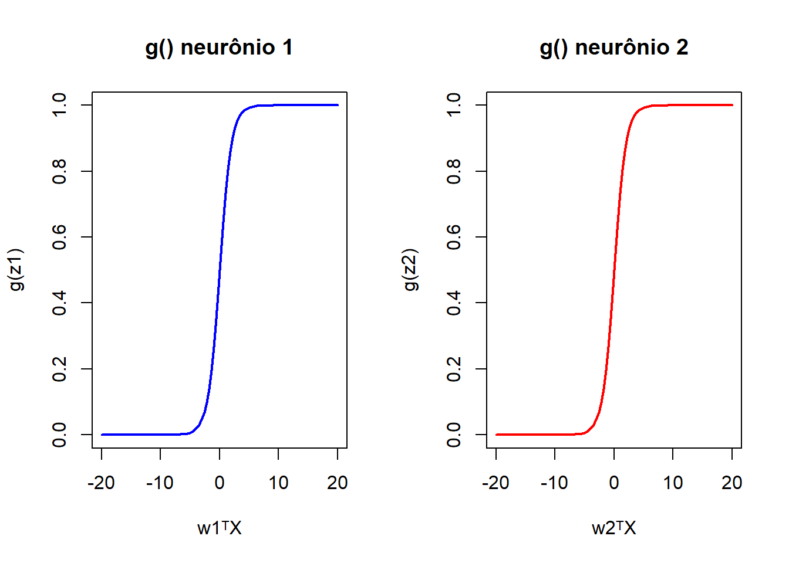
#rug(z2)No método de suavização do gráfico de dispersão, deseja-se estimar a função de regressão \(r(x)=E(y|x)\) a partir da coleção de observações \((y_1,x_1),\ldots,(y_n,x_n)\), para um valor qualquer de \(x\).
A estimativa \(\hat{r}_n\) para um ponto específico \(x'\) é calculada considerando os seguintes passos:
Fixe um valor inteiro positivo \(q \leq n\) (onde a razão \(q/n\) determina a janela de suavização ou span).
Dentro do conjunto \(x_1,\ldots,x_n,\) encontre os \(q\) valores mais próximos de \(x'\) (via distância euclidiana). Denote este conjunto de vizinhança por \(\mathcal{V}\) e denote por \(d\) a maior distância encontrada entre \(x'\) e os pontos de \(\mathcal{V}\).
Para cada \(x_i\) (\(i = 1, \ldots, n\)), defina o peso tricúbico associado por:\[v_i(x')=\left\{\begin{array}{ll}\left(1-\left| \frac{x_i-x'}{d}\right|^3\right)^3&,\;\;\hbox{se }|x_j-x'|\leq d\\ 0,&\hbox{caso contrário}\end{array}\right.\] Dessa forma, valores próximos de \(x'\) receberão peso máximo e valores afastados receberão menor peso ou zero.
Ajuste um modelo de regressão polinomial ponderado locais de grau \(p\) (geralmente \(p=1\) ou \(p=2\)), minimizando a soma de quadrados ponderada
\[\sum_{i=1}^n v_i(x')\left(y_i - \sum_{j=0}^p \beta_j x_i^j\right)^2\]
\[\hat{r}_n(x')=\sum_{j=0}^p \hat{\beta}_j (x')^j \]
Considere que \(p=0\). Então, devemos encontrar \(\beta_0\) que minimiza
\[\sum_{i=1}^n v_i(x')\left(y_i - \beta_0\right)^2\] Ao derivar a função em \(\beta_0\) e igual a zero, obtemos
\[\sum_{i=1}^n v_i(x')(y_i-\beta_0)=0\] e o ponto de mínimo é dado por \[\hat{\beta}_0(x')=\sum_{i=1}^n y_i\frac{v_i(x')}{\sum_{i=1}^n v_i(x')},\] algo muito próximo do estimador de Nadarya-Watson..